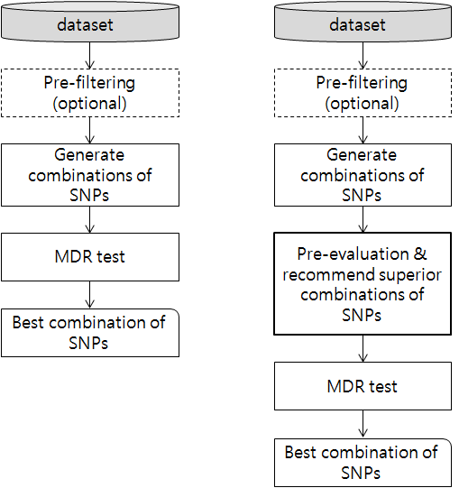

[ Boosting MDR ]
|
1. Introduction Detecting gene-gene interactions during genetic studies of common human diseases is important, and multifactor dimensionality reduction has been widely applied to these ends. However, this technique is not free from the "curse of dimensionality" since it works well for two- or three-way interaction but requires a long execution time and extensive computing resources to detect a 10-way interaction. In this paper, we propose a boosting method that reduces the execution time of multifactor dimensionality reduction by using pre-evaluation measurements to remove gene sets that have low interaction before applying the reduction to the remaining sets. The proposed method reduces the problem space and induces an extreme saving in execution time.

2. Pre-evaluation function Figure2. An example of DF() calculation
3. Supplementary Materials
4. Reference |